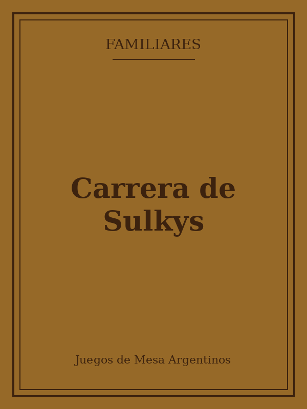

Carrera de Sulkys
★★★★☆
Un juego de carreras con dados y cartas de movimiento, donde cada jugador conduce su propio sulky rumbo a la meta. El tablero ilustrado y las fichas de madera hacen que sea muy atractivo para los más chicos.
Las partidas son cortas y con revanchas garantizadas: nadie se queda con ganas de una sola ronda.